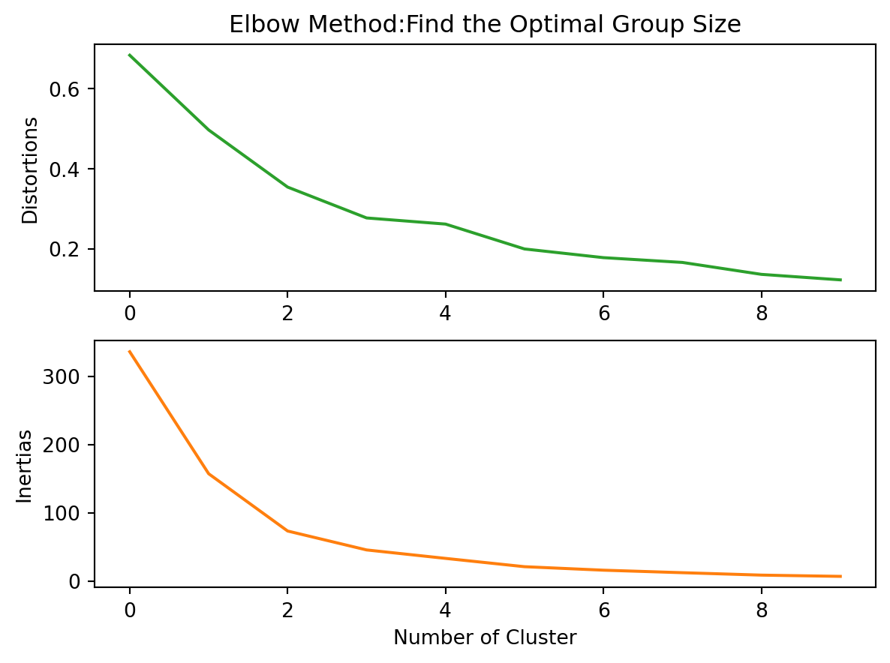
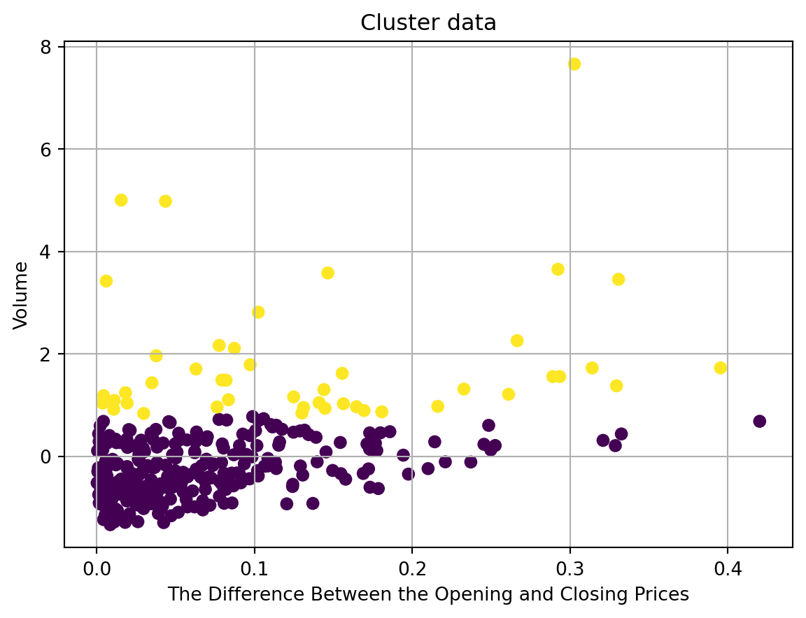
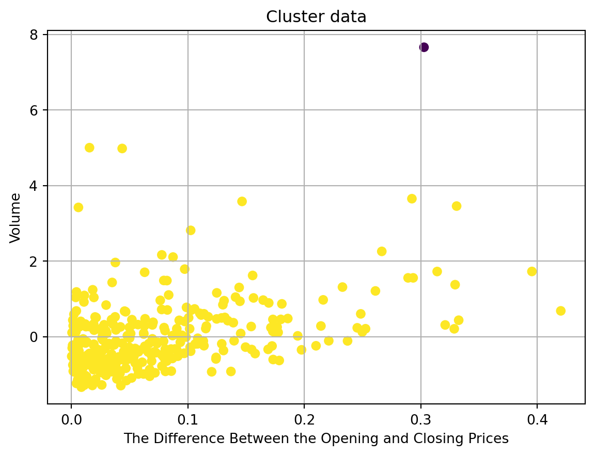

The initial data set contains the opening price, the closing price, the average closing price over 5 days, the average closing price over 20 days, the 30-day ROI, the daily trading volume, and the label: whether the price of the cryptocurrency changed by more than 30% in one day. If the price change is greater than 30%, the label is 1; if the price change is less than 30%, the label is 1. This section mainly uses clustering methods to sort the data, so the label will be removed.
Here I want to explore the overall distribution of daily price difference and daily volume, so a new column named diff_price is used to represent the price difference between the daily open and close prices, and volume is chosen as the second feature.
Theory
1.K-means
K-means is the most commonly used Euclidean distance-based clustering algorithm. When we put the data points in the coordinate system, K-means considers that the closer the distance between two targets, the greater the similarity. When using this method, it is very important to determine the number of groups into which the data are to be divided. The K-value needs to be set manually, and different K-values yield different results. Some of the more common methods for finding the appropriate K-value are the elbow method, the Gap statistic, and the silhouette. These methods can help us to find the best K value directly to help the classification to get better classification results. However, KMeans is easily affected by outliers.
2. DBSCAN
DBSCAN is another clustering method. In DBSAN method, a cluster is a collection of points that is dense in one area and is isolated from other areas of high density by low density areas. DBSCAN is a density based method and sometomes this method is very useful if the whole dataset is not regular and noise and outliers are present.
DBS can takes two parameters: eps and min_samples. Eps means the greatest distance that must separate two samples for either to be considered nearby. min_samples means the quantity of samples required for a location Starting with an unvisited point, all nearby points within eps are found.
Compared with the K-means method, DBSCAN does not require prior information about the number of clusters, can find any shaped clusters, and can identify noise points.
3. Hierarchical Clustering
Hierarchical Clustering can divide the dataset at different levels to form a tree-like clustering structure.
Aggregative Clustering is a commonly used hierarchical clustering algorithm. The principle of this method is that each object is initially considered as a cluster, and then these clusters are merged step by step according to some rules, and so on until a preset number of clusters is reached. The key step here is how to calculate the distance between clusters. Aggregative Clustering is also a distance-based clustering algorithm. # Methods #### Data selection:
In the previous analysis, the cleaned data set was already be divided into two parts. X data set represents all cleaned dataset except label and y data set represents the label column. Hence in the clustering part, only X is choosen becasuse clustering method does not need a exact label, but the label column can be used to check the accuracy at the end.
import necessary packages
Code
import pandas as pdimport numpy as npfrom sklearn.cluster import KMeansfrom sklearn.cluster import DBSCANfrom sklearn.cluster import AgglomerativeClusteringfrom sklearn.cluster import mean_shiftfrom sklearn.cluster import Birchfrom scipy.spatial.distance import cdistimport sklearnimport seaborn as snsimport matplotlib.pyplot as pltimport sklearn.cluster as clusterfrom sklearn.model_selection import train_test_splitfrom sklearn.preprocessing import StandardScalerimport scipy.cluster.hierarchy as schfrom scipy.cluster.hierarchy import linkage, dendrogramimport matplotlib.pyplot as pltfrom sklearn.cluster import MeanShift, estimate_bandwidth
import necessary dataset
Code
X = pd.read_csv('../../data/01-modified-data/x_naive_bayes_r.csv')
fig, (ax1, ax2) = plt.subplots(2, 1)ax1.plot(result_matrix['Distortions'],'tab:green')ax1.set_ylabel('Distortions')ax1.set_title('Elbow Method:Find the Optimal Group Size')ax2.plot(result_matrix['Inertias'],'tab:orange')ax2.set_ylabel('Inertias')ax2.set_xlabel('Number of Cluster')
Text(0.5, 0, 'Number of Cluster')
(a) Distortions

(b) Inertias
Figure 1: Elbow Method:Find the Optimal Group Size
Code
def plot(X,color_vector): fig, ax = plt.subplots() ax.scatter(X.iloc[:,0], X.iloc[:,1],c=color_vector, cmap="viridis") #, alpha=0.5) #, c=y ax.set(xlabel='The Difference Between the Opening and Closing Prices', ylabel='Volume', title='Cluster data') ax.grid()# fig.savefig("test.png") plt.show()
Code
model = sklearn.cluster.KMeans(n_clusters=2).fit(X)labels=model.predict(X)plot(X,labels)

Figure 2: K-Means:Cluster data
From the figure 1, K= 3 is the “elbow” of this graph if we choose ‘elbow method’.
Hyper-parameter tuning for K-Means, silhouette method
Figure 7: Silhouette Method:Find the Optimal parameter
DBSCAN:Final results
Code
plot(X,opt_labels)

Figure 8: DBSCAN:Cluster data
Results
The optimal number of clusters for K-means is 2, so the method divides the entire data set into two groups. DBSCAN also divides the dataset into two groups, but one of them contains only one data point. These two classification methods are not particularly good. In figure 4 and figure 8, there are some obvious outliers and noises. However, K-means divides these outliers into a cluster with the data points below that match the market pattern, which can lead to incorrect analysis and judgment of the market volume.
AgglomerativeClustering divides the data sets into 3 groups. This is an ideal result. Because this method clearly groups outliers from the dataset into a new group, it allows us to clearly identify unusual trades in the market from the grouping.
As seen in Figure 6, there is a linear relationship between price differences and trading volume. As the difference between the opening price and the closing price increases, the trading volume of the cryptocurrency for the day increases slightly.
Conclusions
Code
from PIL import ImagemyImage = Image.open('..//../501-project-website/images/clustering/volumn.png')myImage
Figure 9: BTC-Market Price
From figure 9, we can have the inference that the greater the variation in market prices during a day, the greater the volume of trading. Price variation is positively correlated with volume. The volatility of the market price over a certain period of time is determined by the traders who are bidding at the time. The greater the difference between the highest and lowest prices, the more people are making more demand for trades in that time period.A larger price range leads to more trading opportunities and the chance to make higher profits. People will be more likely to trade for higher profits.
The Agglomerative Clustering results(figure 6) show some obvious outliers, and by looking at the dates of these data points one can infer whether there were any major events that occurred on that day.